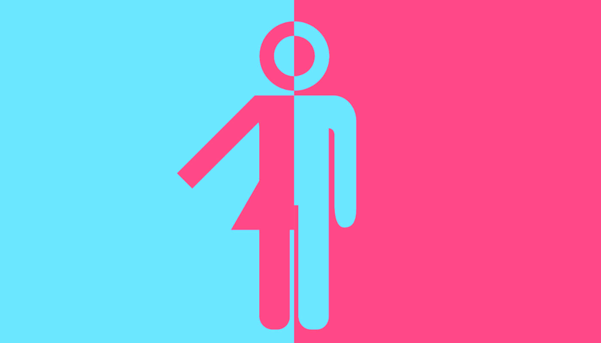
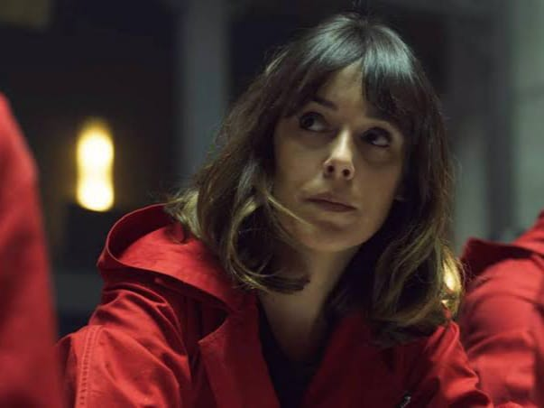
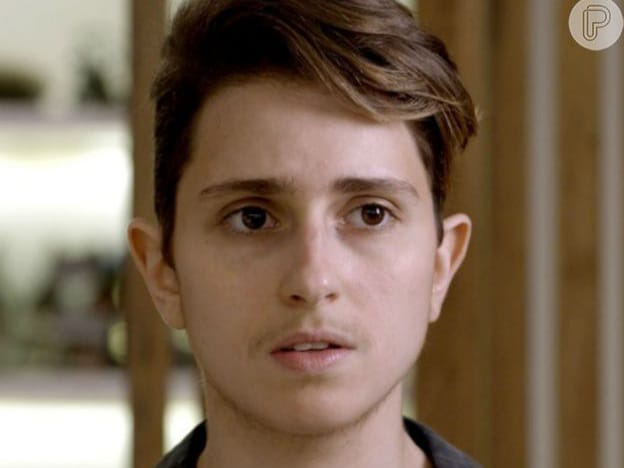
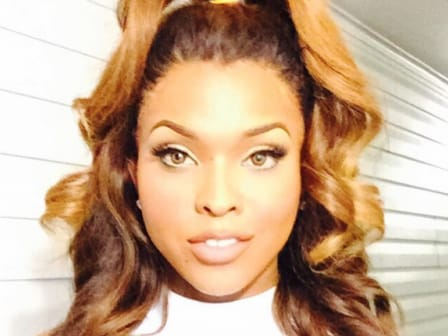
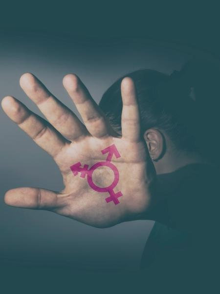
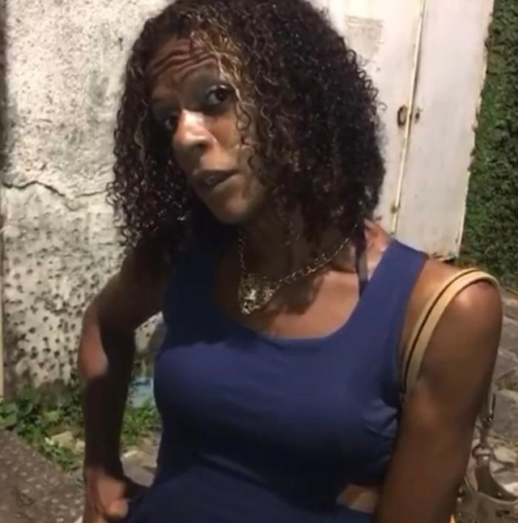

Tudo sobre a letra "T" em LGBTQIA+
Olá bem-vinde a nossa pagina! Nosso objetivo é trazer uma discussão mais casual sobre um tema de extrema relevancia. Por isso separamos este site em três principais tópicos:
Significado geral do "T".
T: transexuais, travestis e transgêneros, que são pessoas que não se identificam com os gêneros
masculino ou feminino atribuídos no nascimento com base nos órgãos sexuais.
Q: questionando ou quer, palavra em inglês que significa “estranho” e, em alguns países, ainda é usado como termo pejorativo.
Diferença entre transgênero e transexual.

O termo transgênero abrange todos os casos de indivíduos que não se enquadram nas imposições
culturais de gênero. Assim,
transexuais, travestis, cross dressers, genderqueer, bigênero, pangênero, drag queen e intersexo são
considerados transgêneros.
Especificamente falando, o transexual é aquele que opta por modificações corporais, através de tratamento hormonal e/ou intervenção cirúrgica a fim de transitar de um sexo para outro. Assim, segundo esse ponto de vista, o transexual seria o indivíduo transgênero que se submete a tratamentos hormonais ou cirurgia de mudança de sexo.
Personalidades transgêneros.
Para entender um pouco mais do assunto é sempre bom ver exemplos não é mesmo? Por este motivo separamos vários exemplos de transgêneros em diferentes tipos de mídias e contamos um pouco sobre suas histórias.
Julia/Manila | La casa de papel

Julia é uma personagem transexual, prima de consideração de Denver e secretamente apaixonada por
ele, Julia possui
uma personalidade alegre e lucida não perdendo a cabeça facilmente.
Julia se junta a gangue de ladroes do Professor, a historia contada pela mesma é trágica
mostrando
seus conflitos com seu pai, devido a dua identidade de gênero e a dificuldade de assumir sua
identidade real.
Felizmente sua história dela possui um bom final, com seu pai aceitando a filha e se tornando um defensor da causa trans.
Ivana | A força do querer

Ivan é um personagem da novela "A força do querer" que inicialmente se identificava como Ivana.
A trama mostra como o personagem não se identificava com seu corpo biológico, mas que no desenrolar da história, ele acaba se conhecendo mais e aceitando a sua verdadeira forma de ser.
Miyuki | Yu Yu hakusho
Miyuki é uma mulher trans que sempre se mostra fica chateada quando é tratada como um homem ou
um ser diferente. Ela também não gosta de ver homens e mulheres sendo tratados com diferença
durante as lutas.
Miyuki, declara ter corpo, voz e coração de mulher, e por esse motivo ser uma, independendo do órgão sexual. Claro e didático.
Ao atentar-se as questões que a personagem Miyuki coloca em voga, temos entre elas a violência contra a mulher, a violência seletiva por gênero, a capacidade da força feminina, o machismo, o preconceito e a visibilidade trans.
Amiya Scott | Atriz

Depois de disparar para o estrelato na mídia social no Instagram, Scott chamou a atenção de Lee
Daniels, que então pediu a ela para fazer um teste para sua última série, Star on Fox.
Este papel fez de Scott a primeira mulher trans com um papel regular em uma série de uma grande rede. Compartilhando sua história de amadurecimento como uma mulher negra trans após o furacão Katrina, ela continua a inspirar as mulheres trans em todos os lugares.
Amanda Guimarães | YouTuber
Quando pequena, Mandy também dizia que gostaria de ser uma mulher. Ou melhor, que ela era uma mulher.
Contudo, apesar da aceitação da família, a mais importante de todas, e de tudo parecer ter ocorrido tranquilamente, Mandy afirma que é vítima de transfobia diariamente. “Muita gente já me magoou.
Já recebi e ainda recebo olhares tortos, como se eu fosse uma aberração . Infelizmente, as pessoas ainda não conseguem aceitar e respeitar o próximo”. Representar as mulheres trans no YouTube é recompensador. Amanda lembra sempre de uma mensagem que recebeu de uma garota que graças ao canal teve coragem de pedir o apoio da família para realizar a transição.
Violência contra transexuais
O Brasil teve 80 pessoas transexuais mortas no 1º semestre de 2021, segundo relatório da Associação Nacional de Travestis e Transexuais (Antra).
Uma delas foi a adolescente Keron Ravach, de 13 anos, assassinada a pauladas em janeiro, no Ceará. Ela se tornou a vítima mais jovem na história do monitoramento, que é feito pela Antra há 4 anos. Segundo a polícia, ela foi morta por um rapaz de 17 anos.
Em mais um caso de violência contra pessoas trans, outro menor de idade era suspeito de atear fogo a Roberta da Silva, de 33 anos, em Recife. Ela ficou internada em uma Unidade de Terapia Intensiva (UTI) e teve um braço e parte de outro amputados.
A Associação Nacional de Travestis e Transexuais (Antra) divulgou um dossiê mostrando que, em 2020, 175 travestis e mulheres transexuais foram mortas no país, um aumento de 41% em relação ao ano anterior.
O caso de Crismilly Pérola
Uma mulher trans foi assassinada com um tiro, na comunidade Beira Rio, na Várzea, Zona Oeste do Recife. A cabeleireira de 37 anos usava o nome social de Crismilly Pérola e também era conhecida como Bombom ou Piu-piu. A família acredita que crime foi motivado por transfobia, que ocorre quando há preconceito contra quem se identifica como transgênero.
As investigações do caso de Crismilly foram iniciadas pelo Departamento de Homicídios e de Proteção à Pessoa (DHPP).
De acordo com o perito criminal Diego Nunes, do Grupo Especializado de Perícias em Homicídios (GEPH), do DHPP, o corpo foi encontrado às margens do Rio Capibaribe.
"A vítima tinha um disparo provocado por arma de fogo na mão que trasfixou e atingiu o pescoço. Ela estava usando um short jeans e um cropped, não tinha nenhum sinal de violência sexual", destacou.
Segundo a família, ela havia saído de casa, onde morava com a família perto do local, a noite, dizendo que iria para a casa de amigos.
Documentário recomendado:
Bibliografia:
Verificar a procedencia de um conteúdo é sempre necessário. Por separamos todas as referências utilizadas:
Clique aqui para ser redirecionado a pagina.